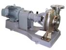

Centrifugal pump series
Suction centrifugal pump : Model GE-2M
FEATURES
- Compact and light weight.
- Easy maintenance and inspection due to BPO (back pull out).
- Simple end suction top centerline discharge position enable steady installation with high discharge pipe loading.
- Wide application for various usages.
- In accordance with JIS B8313.
Catalog >>
End suction centrifugal pump : Model GE-4M
FEATURES- Compact and light weight.
- Easy maintenance and inspection due to BPO (back pull out).
- Long life mechanical seal is adopted for shaft sealing.
- Simple end suction top centerline discharge position enable steady installation with high discharge pipe loading.
- Wide application for various usages.
- In accordance with JIS B8313.
- Less vibration and quiet operation sound because of 4 poles Motor revolution (1450 min-1, 50Hz).

|
Catalog >>
End suction centrifugal pump : Model GF-4M
FEATURES- Easy maintenance and inspection due to BPO (back pull out).
- Long life mechanical seal is adopted for shaft sealing.
- Simple end suction top centerline discharge position enable steady installation with high discharge pipe loading.
- High efficiency and Wide application for various usages.
- In accordance with JIS B8313.
- Less vibration and quiet operation sound because of 4 poles Motor revolution (1450 min-1, 50Hz).
End suction centrifugal pump : Model GD・GDF-2・4M
FEATURES
- High back pressure series adopting balance typed mechanical seal for shaft sealing and FCD (cast ductile iron) material for casing.
- Easy maintenance and inspection due to BPO (back pull out).
-
 Long
life mechanical seal is adopted for shaft sealing.
Long
life mechanical seal is adopted for shaft sealing.
- Simple end suction top centerline discharge position enable steady installation with high discharge pipe loading.
- High efficiency and wide application for various usages.
- In accordance with JIS B8313.
- Less vibration and quiet operation sound because of 4 poles Motor revolution (1450 min-1, 50Hz).
Vertical turbine pump series
Vertical multistage inline pump : Model QBS, QSBI, QSBN
FEATURES
- The most appropriate mode can be selected for the service condition from the wide variation of output (0.37kW-75kW).
- Standard specification : 0 to 120℃.
- Assembly cartridge mechanical seal, making installation and maintenance safer and more convenient, and guaranteeing the reliability of the mechanical seal.
- Motor is adopted IP55 class F TEFC outdoor use.
Catalog >>
Single stage inline pump : Model PSS / PE
FEATURES
- Strong against deterioration of bearing and insulation due to TEFC motor.
- Long time and strong against leakage due to adoption of high quality mechanical seal which can stand antifreeze.
- No rusting and easy maintenance because of rust proof materials are used
| PE Model | PSS Model |
Package booster pump unit series
Valuable speed controlled package booster pump : Model KF2
Energy-saving operation cutting energy by up to 40% is possible by optimally controlling the pump speed, according to the working water rate with the inverter, and by limiting pressure fluctuation at the terminal with the constant estimated terminal pressure water supply. (comparison with KAWAMOTO regulator type constant discharge pressure water supply.)
Technical Handbook >>
Pressure sensor controlled package booster pump : Model KB2
 FEATURES
FEATURES
- Energy-saving effect is realized by operation time adjustment function with alternate and alternate / parallel operation type.
- Contactless pressure sensor to start pump, flow sensor to stop pump.
Technical Handbook >>
Catalog >>
Self-priming pump series
Self-priming pump : Model GSO3/GS3-C/GS-M series
FEATURES
- Outstanding self-priming performance enables to pumping even from -8.4m deep well. (GSO3 type)
- Mechanical seal with outstanding sand-resisting properties and sand-resistant structure are incorporated. (GSO3 type)
- The semi-opened impeller is strong against foreign matter such as sand. (GSO3 type)
| GSO3 Model | GS3-C Model | >GS-M Model |
Catalog >>
Self-priming pump : Model FS(4)-M/FS-F/FSR-F
FEATURES
- Self-priming pump construction does not require foot valve and makes priming works easier.
- High efficiency and high suction performance.
- Easy maintenance and inspection due to back pull out construction.
- Mechanical seal types are also available.
(bore size 50 -100mm

|
||
| FS(4)-M Model | FS-F Model | FS-F Model |
Catalog >>
Stainless steel pump series
Stainless steel pump : Model GES-2M,GES-4M and Q series
FEATURES
- Sanitary and clean due to stainless material are used for portion contacting liquid.
- Maintenance is easy because Long life mechanical seal is adopted for shaft sealing.
- Easy maintenace and inspection because of BPO (back pull out).
- High efficiency and high total head pump design by using precision casting stainless steel.

|
 | ||
| GES-2M Model | GES-4M Model | Q series Model | |
Submersible pump series
Submersible pump : Model ZUJ
FEATURES
- Opened impeller provides excellent ability to pass foreign material.
- The pump is free from forming air pocket behind impeller.
- Equipped with a motor with built-in auto-cut to prevent motor burnout.
ZUJ type
Catalog >>
Submersible pump : Model BU4
FEATURES
- Non-clog impeller and our original casing structure (P.A.T) provide high pumping performance.
- Equipped with a motor with built-in auto-cut (less than 7.5kw) to prevent motor burn out.
- Motor with output of 11kW or above can detect abnormal temperature rise of the motor coil as an external signal.
- High pressure model BU4-H type is also available.
Catalog >>
Submersible pump : Model VU4
FEATURES
- Excellent ability to pass foreign material without entangling.
- Can discharge spherical solids with a diameter which equals to the bore size (100% solid passage model)
- Motor with output of 11kW or above can detect abnormal temperature rise of the motor coil as an external signal.
Catalog >>
Submersible pump : Model WUO-F
FEATURES
- Vortex type has outstanding foreign matter passage performance.
- Light and easy to use submerged pump is for sewage and sludge application.
- A long life is attained with the stainless steel frame motor and resin parts.
- Reinforced resin with glass fibers is used for the impeller and casing.
- The motor has large starting torque, and the built in auto-cut function ensures trouble-free operation
- This pump can be used with the resin discharge elbow (Floor mounted type)
Catalog >>
Submersible pump : Model WUP3-G
FEATURES
- Light and easy to handle, due to reinforced resin pump parts and motor with stainless steel frame.
- Corrosion proof and long-life.
- Vortex impeller type and excellent performance to pass foreign object.
- Strainer is quick detachable type for easy cleaning and maintenance.
Catalog >>
Sump pump pit unit : Model TAZE2-5S25
FEATURES
- Light and easy to handle, due to glass fiber reinforced pump parts and motor with stainless steel frame.
- Strainer is quick detachable type for easy cleaning and maintenance. Starting/stopping water level are adjustable in L and LN types.
Catalog >>
Control panel
Submersible pump : Model ECDW-S
FEATURES
- High quality and anti-corrosion paint.
- LED Lamp is adopted.
- Compact, light weight and easy to install.
Coolant pump series

Coolant pump : Model RCD
FEATURES
- Zero maintenance because of its non-seal structure
- Unique double anti-splash structure
- Support available for all specification
- Aluminum die-cast terminal box
Catalog >>
Coolant pump : Model RCE
FEATURES

- Zero maintenance because of its non-seal structure
- Unique double anti-splash structure
- Support available for all specification
- Aluminum die-cast terminal box
Catalog >>
Coolant pump : Model RCJ
FEATURES
- Zero maintenance because of its non-seal structure
- Unique double anti-splash structure
- Support available for all specification
- Aluminum die-cast terminal box
Catalog >>
Coolant pump : Model RCA
FEATURES
- Zero maintenance because of its non-seal structure
- High operating reliability ensured by semi-open impeller
- Aluminum die-cast terminal box
 |
|||
| 60W·100W Model | 180W Model; | 250W Model | 400W Model |
Catalog >>